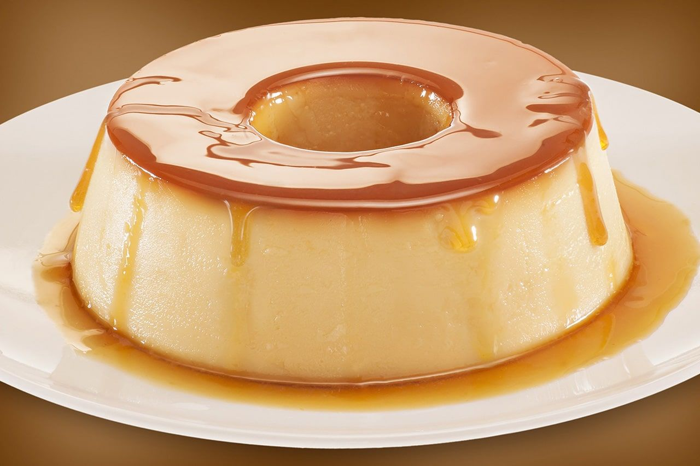
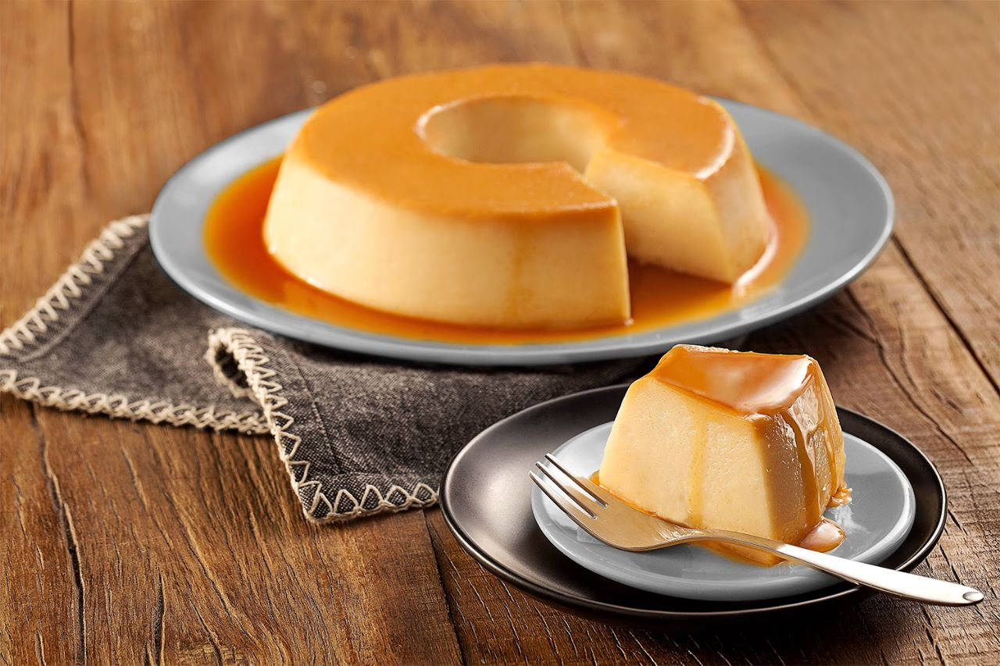

O pudim é uma sobremesa irresistível que se destaca por sua textura cremosa e sabor suave. Sua consistência aveludada e o toque de caramelo no topo criam uma combinação perfeita de doçura e leveza. Embora a versão tradicional com caramelo seja a mais conhecida, o pudim pode ser encontrado em uma variedade de sabores, como chocolate, café, coco e frutas. Cada variação traz uma nova dimensão ao prazer de saborear essa sobremesa, permitindo experiências distintas e deliciosas. Seja qual for o sabor escolhido, o pudim sempre oferece uma sensação de conforto e satisfação, tornando-se uma escolha versátil e adorada para qualquer ocasião.
